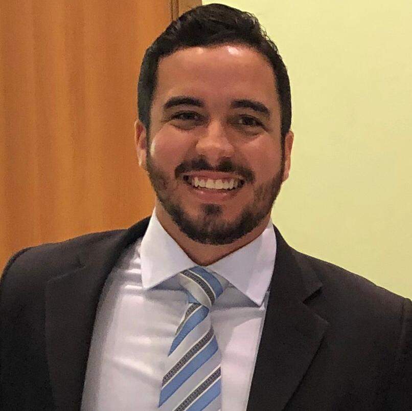
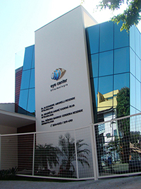

César Pereira de Araújo
Médico Oftalmologista
Especialista em Retina e Vítreo
CRM 179.421 SP
RQE 72.472
Médico pela Universidade Federal de Alagoas.
Residência Médica em Oftalmologia pela Universidade Federal do Ceará.
Pós-Graduação em Oftalmologia - Retina e Vítreo (Clinical and Surgical Fellowship) pelo Hospital Oftalmológico de Sorocaba - SP.
Fellowship Observer em Retina e Vítreo pelo Institut Catalá de Retina - Barcelona - Espanha.
Preceptor do Departamento de Retina e Vítreo do Hospital Oftalmológico de Sorocaba - SP.
Membro Titular do Conselho Brasileiro de Oftalmologia e Academia Médica Brasileira.
Membro da Sociedade Brasileira de Retina e Vítreo.
Prêmio Oswaldo Moura Brasil Best Surgical Case Report - 44º Congresso da Sociedade Brasileira de Retina e Vítreo - 2019.
Currículo lattes
Hospital Oftalmológico de Sorocaba - BOS
Sorocaba - SP
(15) 3212-7000

EYE Center Oftalmologia
Sorocaba - SP
(15) 3234-6353
SF Oftalmologia
Piracicaba - SP
(19) 3902-6232